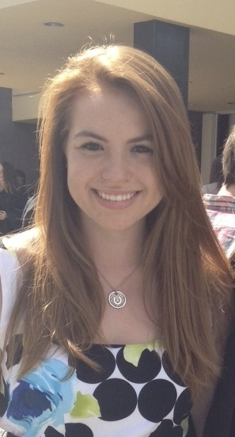

Hi, my name is Alessandra Moscucci.
I am an avid horseback rider who spends her weekends taking care of her horses and competing. Partying was never my favorite past time. Instead, I focused on finding ways to put myself at the head of the heard. I became the Editor in Chief of my high school newspaper as a sophomore. As a senior, among the angst of applying to colleges and wondering about my future, I sought out a Location Scout and became her assistant, after realizing how much I loved the production world while I was on the beach with a horse for a music video. Eventually I was able to work on all kinds of production sets ranging from music videos to photo shoots for kids clothing.
For the past three summers, I have traveled to Germany to compete horses in international competitions. While I was there this past summer I got the chance to intern with a media group in Herford, Germany for a few weeks. I have an ongoing internship with the University of Miami Medical Communications group, and every once in a while, I still work in production when it does not conflict with my school schedule.
Having moved from Ann Arbor, Michigan, to Miami as a teenager, I grew up with a different cultural background in comparison to my schoolmates. Because of this I believe that I have a unique cultural outlook that allows me to look at situations in multiple ways. I immediately clashed with my schoolmates and had to find a different outlet to allow myself to grow.
As a young adult, I am continuously seeking opportunities. I don’t know where I am going or where I will be when I get there, but my life is a journey that I will continue traveling until I get there.